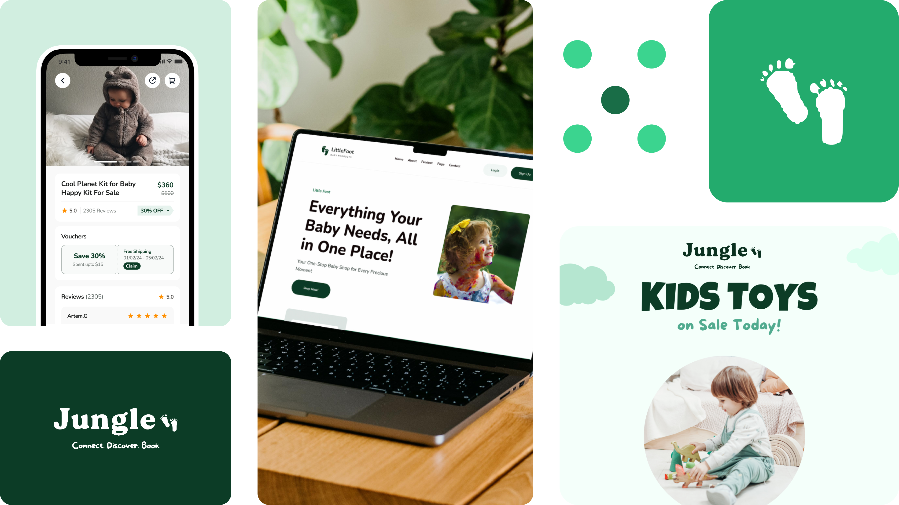

Jungle
A discovery experience designed to help people find, explore and book memorable things to do.
Travel / Experiences
Mobile product
Product Designer
2025
.png)
Turning discovery into an experience that feels exciting, simple and easy to navigate.
Jungle brings discovery and booking into one focused journey. The product direction balances inspiring content with clear decisions, helping users move naturally from browsing to choosing an experience.

Make discovery feel inspiring—not overwhelming.
The challenge was creating enough variety to encourage exploration while keeping the interface understandable. Strong hierarchy, filters and consistent content patterns help users browse confidently.
Explore first.
Decide with confidence.
The experience was structured around progressive discovery: broad inspiration first, useful detail second, and clear booking actions when the user is ready.

A flexible system for places, experiences and stories.
Reusable cards, categories, detail layouts and booking patterns create a visual language that can scale across different types of content without losing consistency.


A richer path from curiosity to booking.
The resulting direction gives Jungle a distinct discovery-led experience while maintaining the clarity needed for users to make decisions and complete bookings.